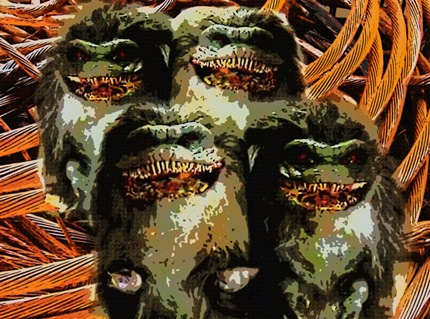

Goblins Invade southern Missouri town of Kennett

{kind=link}

ST. LOUIS – Goblins have invaded the southern Missouri town of Kennett. The creatures appear to have been drawn there by the town’s ample supply of copper. Goblins have been witnessed stealing copper plumbing and gutters from more than half the town’s homes and businesses.
Nobody dares stop them. Goblin bites can become fatally infected within hours due to the septic pathogens found in their saliva.
Local veterinarian Patricia Tsosie, an expert on animal bites says, “the goblin bite is among the most vicious in the animal kingdom. Similar to the Kimodo Dragon the goblin bite causes rapid swelling, localized disruption of blood clotting, and shooting pain, eventually resulting in death. I’ve lost several animal and even even heard of a few human patients dying from this deadly bite.”
Because of the goblins appetite for copper, PVC pipe and aluminum gutter sales are skyrocketing. So much so that many local residents suspect that Lowes and Home depot have somehow brought the copper thieving goblins to town.
Local resident, Michael Hamilton says, “Think about it. Who’s making out here? Lowes and Home Depot have been slow as anything because of the economy. Then all the sudden these goblins hit and they can’t keep pipes or gutters in stock. I seen one of them goblins taking the copper pipes right out from under my trailer and I couldn’t do nothin but watch. Those bites will kill you. I saw them take apart a kid last week like he was nothing. Another guy at my work got bit on the leg and he was dead before morning. I thought maybe he was going to come back as a goblin, but I guess it don’t work like that. Anyway it was Lowes and Home Depot that teamed up and brought them goblins here. We never even had so much as a hobo in town before.”
Dr. Russ T. Warner who is studying the unusual case, believes this to be a special breed of copper goblin who was prevalent in Europe during the Copper Age. Warner states “During the Chalcolithic or Copper Age, between 3500 to 1700BC mankind was constantly at battle with the copper goblin. Copper was used for spear points, tools, and decorative objects. Even traded for other exotic goods. Goblins were common place in those days, and man had methods for dealing with them. We no longer know how to fight them.”
No methods for dealing with the goblins are currently known. Kennett and surrounding areas are are at the mercy of the gobin hoardes.
Sharlene Garza witnessed a goblin attack on Kennett National bank. “Kennett National had beautiful copper gutters and flashing ever since it was built years ago. It had that nice green look on it like the Statue of Liberty. About 50 of them goblins climbed the side of the bank and started eating the metal right off it. They have sharp teeth because they ate right through it and didn’t leave a speck of copper dust there. One of them ate so much of it his gut was all swollen and a couple of the other goblins were dragging him away. I hope they ate that one because he was a real pig of a goblin eating all that copper like that.”
The bank is currently closed until repairs can be made. Contractors have placed bids for the job to to replace the copper with inexpensive goblin-resistant aluminum. However no work will be done until next spring since contractors are so backlogged with work.
“Goblins is the best thing that happened around here since in a long time. Since the economy dropped we’s all been out of work, but when the goblins came to town it’s 7 days a week. I love them little goblins. I throw out a couple copper scraps here and there for them as appreciation for what they done for us. Thinking of hanging up a couple feeders outside the office just to keep them around,” states Callum Viner owner of Kennett Construction and Builders Inc.
As to the goblins true origin, we may never know, but some have theories that don’t include a Lowes and Home Depot conspiracy against the town.
“I believe these goblins are not from Europe as the town’s people believe, but are actually American Copper Goblins who have been dormant in the Western Great Lakes for centuries. Lake Superior has veins of 99% pure copper and several thousand years ago was the center of a large copper goblin infestation. It’s entirely possible that they were awakened by a construction project or other disturbance and made their way down here in search of copper, “ adds Warner.
Residents in Kennett and surrounding regions are advised to remove all copper from their homes as soon as possible for curbside pickup. It is hoped that once all copper is gone from the region, the goblin menace will move on.
Related posts

What is the Difference Between a City and a Town?
A man once asked me what is the difference between a city and a town? A city is bigger I…
Comments